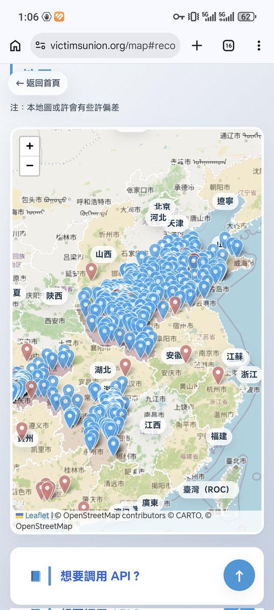
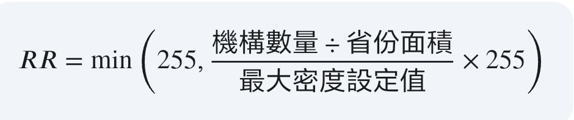

🧊泠小米❄️
@QWQ73416
@HosinoEJ @LwrDHYyuxR22499 笑点分析，台湾一个都没有🤣


星野寧子 | HosinoNeko
@HosinoEJ
NCT.project更新：
- 各省地圖染色邏輯修改，以前是根據學校數量，當該省學校數量高於某値時，採用另一個顏色，而現在，我們不直接比較學校的數量，而是計算學校密度推算出該省RGB代碼。
RR = \min\left(255, \frac{\text{機構數量} \div \text{省份面積}}{\text{最大密度設定值}} \times 255\right) https://t.co/Ps0qagw6LI